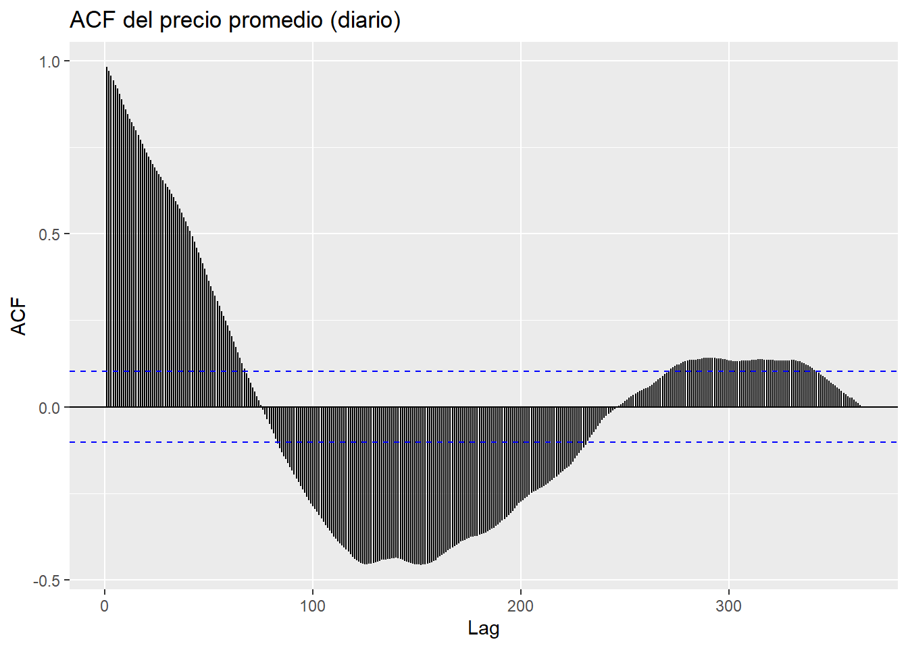

Capítulo 4 Literature
4.0.1 Cargue de Datos
## Warning: package 'readr' was built under R version 4.3.3## Warning: package 'dplyr' was built under R version 4.3.3##
## Attaching package: 'dplyr'## The following objects are masked from 'package:stats':
##
## filter, lag## The following objects are masked from 'package:base':
##
## intersect, setdiff, setequal, union## Warning: package 'lubridate' was built under R version 4.3.3##
## Attaching package: 'lubridate'## The following objects are masked from 'package:base':
##
## date, intersect, setdiff, union## Warning: package 'forecast' was built under R version 4.3.3## Registered S3 method overwritten by 'quantmod':
## method from
## as.zoo.data.frame zoo## Warning: package 'tseries' was built under R version 4.3.34.0.3 Análisis Exploratorio de Datos (EDA)
## # A tibble: 6 × 7
## SN Commodity Date Unit Minimum Maximum Average
## <dbl> <chr> <date> <chr> <dbl> <dbl> <dbl>
## 1 0 Tomato Big(Nepali) 2013-06-16 Kg 35 40 37.5
## 2 1 Tomato Small(Local) 2013-06-16 Kg 26 32 29
## 3 2 Potato Red 2013-06-16 Kg 20 21 20.5
## 4 3 Potato White 2013-06-16 Kg 15 16 15.5
## 5 4 Onion Dry (Indian) 2013-06-16 Kg 28 30 29
## 6 5 Carrot(Local) 2013-06-16 Kg 30 35 32.5## spc_tbl_ [197,161 × 7] (S3: spec_tbl_df/tbl_df/tbl/data.frame)
## $ SN : num [1:197161] 0 1 2 3 4 5 6 7 8 9 ...
## $ Commodity: chr [1:197161] "Tomato Big(Nepali)" "Tomato Small(Local)" "Potato Red" "Potato White" ...
## $ Date : Date[1:197161], format: "2013-06-16" "2013-06-16" ...
## $ Unit : chr [1:197161] "Kg" "Kg" "Kg" "Kg" ...
## $ Minimum : num [1:197161] 35 26 20 15 28 30 6 30 35 25 ...
## $ Maximum : num [1:197161] 40 32 21 16 30 35 10 35 40 30 ...
## $ Average : num [1:197161] 37.5 29 20.5 15.5 29 32.5 8 32.5 37.5 27.5 ...
## - attr(*, "spec")=
## .. cols(
## .. SN = col_double(),
## .. Commodity = col_character(),
## .. Date = col_date(format = ""),
## .. Unit = col_character(),
## .. Minimum = col_double(),
## .. Maximum = col_double(),
## .. Average = col_double()
## .. )
## - attr(*, "problems")=<externalptr>## SN Commodity Date Unit
## Min. : 0 Length:197161 Min. :2013-06-16 Length:197161
## 1st Qu.: 49290 Class :character 1st Qu.:2015-08-24 Class :character
## Median : 98580 Mode :character Median :2017-08-03 Mode :character
## Mean : 98580 Mean :2017-08-09
## 3rd Qu.:147870 3rd Qu.:2019-08-27
## Max. :197160 Max. :2021-05-13
## Minimum Maximum Average
## Min. : 1.00 Min. : 6.00 Min. : 5.00
## 1st Qu.: 40.00 1st Qu.: 45.00 1st Qu.: 42.50
## Median : 60.00 Median : 70.00 Median : 65.00
## Mean : 85.42 Mean : 94.16 Mean : 89.79
## 3rd Qu.: 100.00 3rd Qu.: 110.00 3rd Qu.: 105.00
## Max. :1800.00 Max. :2000.00 Max. :1900.00## [1] 0No se observan datos faltantes en el dataset
## [1] 0No se observan datos duplicados en el dataset
4.0.4 análisis Univariado
# Distribución de precios promedio
ggplot(data, aes(x = Average)) +
geom_histogram(binwidth = 5, fill = "blue", color = "black", alpha = 0.7) +
labs(title = "Distribución de Precios Promedio", x = "Precio Promedio", y = "Frecuencia") +
theme_minimal()
# Estadísticas descriptivas de precios promedio
data %>%
summarise(
Mean = mean(Average),
Median = median(Average),
SD = sd(Average),
Min = min(Average),
Max = max(Average)
)## # A tibble: 1 × 5
## Mean Median SD Min Max
## <dbl> <dbl> <dbl> <dbl> <dbl>
## 1 89.8 65 79.6 5 19004.0.5 Análisis Bivariado
# Relación entre precio mínimo y precio máximo
ggplot(data, aes(x = Minimum, y = Maximum)) +
geom_point(alpha = 0.5) +
labs(title = "Relación entre Precio Mínimo y Máximo", x = "Precio Mínimo", y = "Precio Máximo") +
theme_minimal()## [1] 0.99506144.0.7 Filtrar 3 items
# autoplot de la serie de tiempo del precio promedio
autoplot(ts(potatored_ts$Average, frequency = 365, start = c(2013, 1))) +
labs(title = "Serie de Tiempo: Precio Promedio de Papa Roja", y = "Precio Promedio") +
theme_minimal()

ggseasonplot(ts(potatored_ts$Average, frequency = 365, start = c(2013, 1)), year.labels=TRUE, year.labels.left=TRUE) +
labs(title = "Seasonal Plot: Precio Promedio", y = "Precio Promedio") +
theme_minimal()
ggsubseriesplot(ts(potatored_ts$Average, frequency = 365, start = c(2013, 1))) +
labs(title = "Subseries Plot: Precio Promedio", y = "Precio Promedio") +
theme_minimal()
ggAcf(ts(potatored_ts$Average, frequency = 365, start = c(2013, 1)), main = "ACF del Precio Promedio")## Warning in ggplot2::geom_segment(lineend = "butt", ...): Ignoring unknown
## parameters: `main`
decompose(ts_data <- ts(potatored_ts$Average, frequency = 365, start = c(2013, 1))
)$trend %>% autoplot() + labs(title = "Tendencia del Precio Promedio", y = "Tendencia") + theme_minimal()decompose(ts_data <- ts(potatored_ts$Average, frequency = 365, start = c(2013, 1))
)$seasonal %>% autoplot() + labs(title = "Estacionalidad del Precio Promedio", y = "Estacionalidad") + theme_minimal()
Xie, Yihui. 2015. Dynamic Documents with R and Knitr. 2nd ed. Boca Raton, Florida: Chapman; Hall/CRC. http://yihui.name/knitr/.
———. 2025. Bookdown: Authoring Books and Technical Documents with r Markdown. https://github.com/rstudio/bookdown.